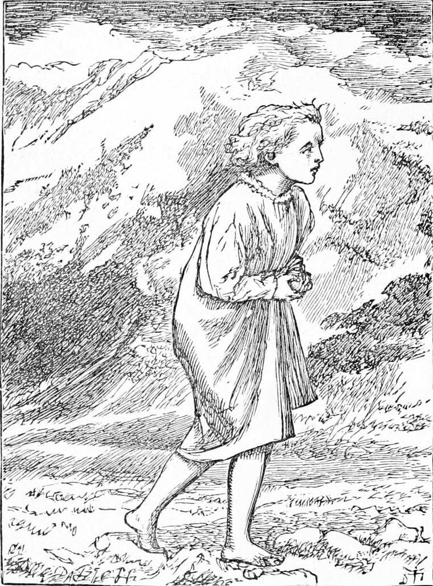
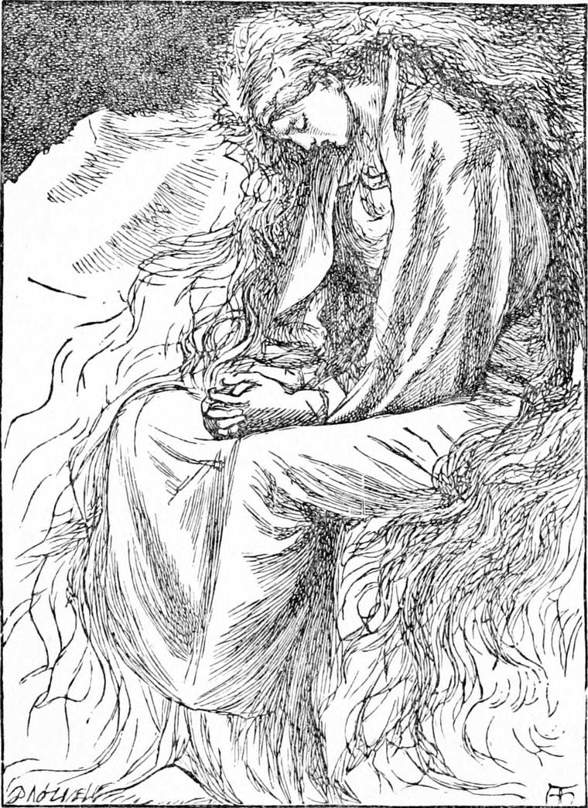

WHEN one at the back of the north wind wanted to know how things were going with any one he loved, he had to go to a certain tree, climb the stem, and sit down in the branches. In a few minutes, if he kept very still, he would see something at least of what was going on with the people he loved.
One day when Diamond was sitting in this tree, he began to long very much to get home again, and no wonder, for he saw his mother crying. Durante says that the people there may always follow their wishes, because they never wish but what is good. Diamond's wish was to get home, and he would fain follow his wish.
But how was he to set about it? If he could only see North Wind! But the moment he had got to her back, she was gone altogether from his sight. He had never seen her back. She might be sitting on her doorstep still, looking southwards, and waiting, white and thin and blue-eyed, until she was wanted. Or she might have again become a mighty creature, with power to do that which was demanded of her, and gone far away upon many missions. She must be somewhere, however. He could not go home without her, and therefore he must find her. She could never have intended to leave him always away from his mother. If there had been any danger of that, she would have told him, and given him his choice about going. For North Wind was right honest. How to find North Wind, therefore, occupied all his thoughts.

In his anxiety about his mother, he used to climb the tree every day, and sit in its branches. However many of the dwellers there did so, they never incommoded one another; for the moment one got into the tree, he became invisible to every one else; and it was such a wide-spreading tree that there was room for every one of the people of the country in it, without the least interference with each other. Sometimes, on getting down, two of them would meet at the root, and then they would smile to each other more sweetly than at any other time, as much as to say, “Ah, you've been up there too!”
One day he was sitting on one of the outer branches of the tree, looking southwards after his home. Far away was a blue shining sea, dotted with gleaming and sparkling specks of white. Those were the icebergs. Nearer he saw a great range of snow-capped mountains, and down below him the lovely meadow-grass of the country, with the stream flowing and flowing through it, away towards the sea. As he looked he began to wonder, for the whole country lay beneath him like a map, and that which was near him looked just as small as that which he knew to be miles away. The ridge of ice which encircled it appeared but a few yards off, and no larger than the row of pebbles with which a child will mark out the boundaries of the kingdom he has appropriated on the sea-shore. He thought he could distinguish the vapoury form of North Wind, seated as he had left her, on the other side. Hastily he descended the tree, and to his amazement found that the map or model of the country still lay at his feet. He stood in it. With one stride he had crossed the river; with another he had reached the ridge of ice; with the third he stepped over its peaks, and sank wearily down at North Wind's knees. For there she sat on her doorstep. The peaks of the great ridge of ice were as lofty as ever behind her, and the country at her back had vanished from Diamond's view.
North Wind was as still as Diamond had left her. Her pale face was white as the snow, and her motionless eyes were as blue as the caverns in the ice. But the instant Diamond touched her, her face began to change like that of one waking from sleep. Light began to glimmer from the blue of her eyes.
A moment more, and she laid her hand on Diamond's head, and began playing with his hair. Diamond took hold of her hand, and laid his face to it. She gave a little start.
“How very alive you are, child!” she murmured. “Come nearer to me.”

By the help of the stones all around he clambered up beside her, and laid himself against her bosom. She gave a great sigh, slowly lifted her arms, and slowly folded them about him, until she clasped him close. Yet a moment, and she roused herself, and came quite awake; and the cold of her bosom, which had pierced Diamond's bones, vanished.
“Have you been sitting here ever since I went through you, dear North Wind?” asked Diamond, stroking her hand.
“Yes,” she answered, looking at him with her old kindness.
“Ain't you very tired?”
“No; I've often had to sit longer. Do you know how long you have been?”
“Oh! years and years,” answered Diamond.
“You have just been seven days,” returned North Wind.
“I thought I had been a hundred years!” exclaimed Diamond.
“Yes, I daresay,” replied North Wind. “You've been away from here seven days; but how long you may have been in there is quite another thing. Behind my back and before my face things are so different! They don't go at all by the same rule.”
“I'm very glad,” said Diamond, after thinking a while.
“Why?” asked North Wind.
“Because I've been such a long time there, and such a little while away from mother. Why, she won't be expecting me home from Sandwich yet!”
“No. But we mustn't talk any longer. I've got my orders now, and we must be off in a few minutes.”
Next moment Diamond found himself sitting alone on the rock. North Wind had vanished. A creature like a great humble-bee or cockchafer flew past his face; but it could be neither, for there were no insects amongst the ice. It passed him again and again, flying in circles around him, and he concluded that it must be North Wind herself, no bigger than Tom Thumb when his mother put him in the nutshell lined with flannel. But she was no longer vapoury and thin. She was solid, although tiny. A moment more, and she perched on his shoulder.
“Come along, Diamond,” she said in his ear, in the smallest and highest of treble voices; “it is time we were setting out for Sandwich.”
Diamond could just see her, by turning his head towards his shoulder as far as he could, but only with one eye, for his nose came between her and the other.
“Won't you take me in your arms and carry me?” he said in a whisper, for he knew she did not like a loud voice when she was small.
“Ah! you ungrateful boy,” returned North Wind, smiling “how dare you make game of me? Yes, I will carry you, but you shall walk a bit for your impertinence first. Come along.”
She jumped from his shoulder, but when Diamond looked for her upon the ground, he could see nothing but a little spider with long legs that made its way over the ice towards the south. It ran very fast indeed for a spider, but Diamond ran a long way before it, and then waited for it. It was up with him sooner than he had expected, however, and it had grown a good deal. And the spider grew and grew and went faster and faster, till all at once Diamond discovered that it was not a spider, but a weasel; and away glided the weasel, and away went Diamond after it, and it took all the run there was in him to keep up with the weasel. And the weasel grew, and grew, and grew, till all at once Diamond saw that the weasel was not a weasel but a cat. And away went the cat, and Diamond after it. And when he had run half a mile, he found the cat waiting for him, sitting up and washing her face not to lose time. And away went the cat again, and Diamond after it. But the next time he came up with the cat, the cat was not a cat, but a hunting-leopard. And the hunting-leopard grew to a jaguar, all covered with spots like eyes. And the jaguar grew to a Bengal tiger. And at none of them was Diamond afraid, for he had been at North Wind's back, and he could be afraid of her no longer whatever she did or grew. And the tiger flew over the snow in a straight line for the south, growing less and less to Diamond's eyes till it was only a black speck upon the whiteness; and then it vanished altogether. And now Diamond felt that he would rather not run any farther, and that the ice had got very rough. Besides, he was near the precipices that bounded the sea, so he slackened his pace to a walk, saying aloud to himself:
“When North Wind has punished me enough for making game of her, she will come back to me; I know she will, for I can't go much farther without her.”
“You dear boy! It was only in fun. Here I am!” said North Wind's voice behind him.
Diamond turned, and saw her as he liked best to see her, standing beside him, a tall lady.
“Where's the tiger?” he asked, for he knew all the creatures from a picture book that Miss Coleman had given him. “But, of course,” he added, “you were the tiger. I was puzzled and forgot. I saw it such a long way off before me, and there you were behind me. It's so odd, you know.”
“It must look very odd to you, Diamond: I see that. But it is no more odd to me than to break an old pine in two.”
“Well, that's odd enough,” remarked Diamond.
“So it is! I forgot. Well, none of these things are odder to me than it is to you to eat bread and butter.”
“Well, that's odd too, when I think of it,” persisted Diamond. “I should just like a slice of bread and butter! I'm afraid to say how long it is—how long it seems to me, that is—since I had anything to eat.”
“Come then,” said North Wind, stooping and holding out her arms. “You shall have some bread and butter very soon. I am glad to find you want some.”
Diamond held up his arms to meet hers, and was safe upon her bosom. North Wind bounded into the air. Her tresses began to lift and rise and spread and stream and flow and flutter; and with a roar from her hair and an answering roar from one of the great glaciers beside them, whose slow torrent tumbled two or three icebergs at once into the waves at their feet, North Wind and Diamond went flying southwards.